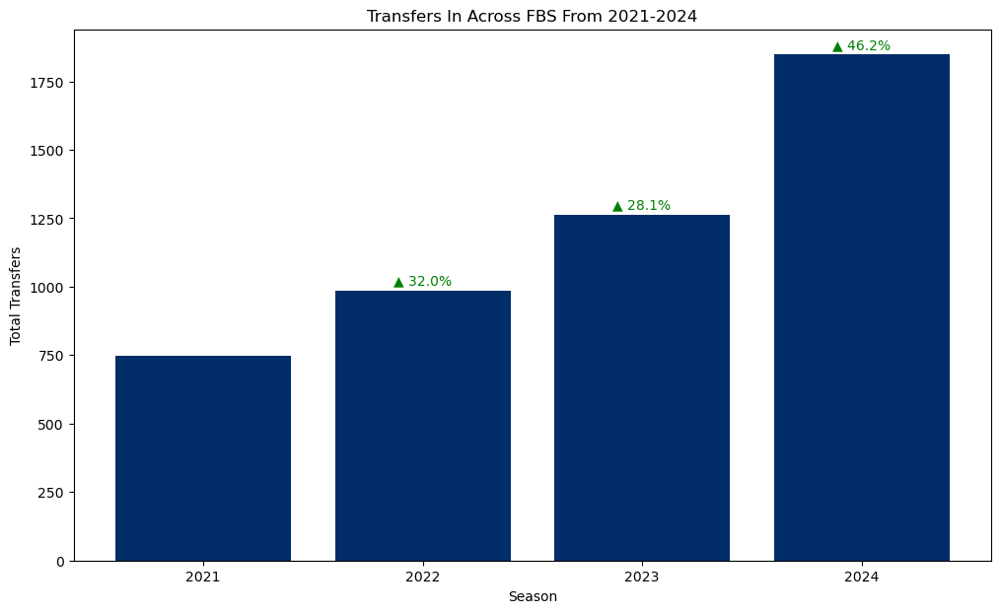
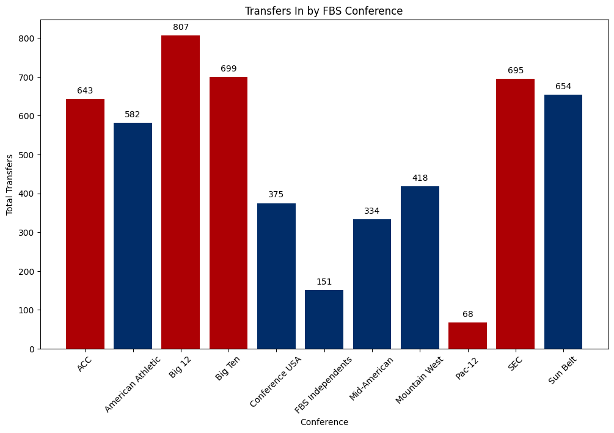
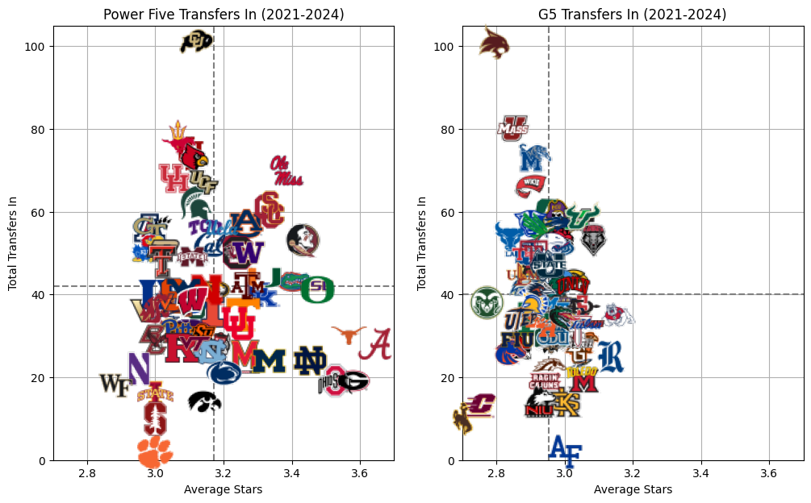
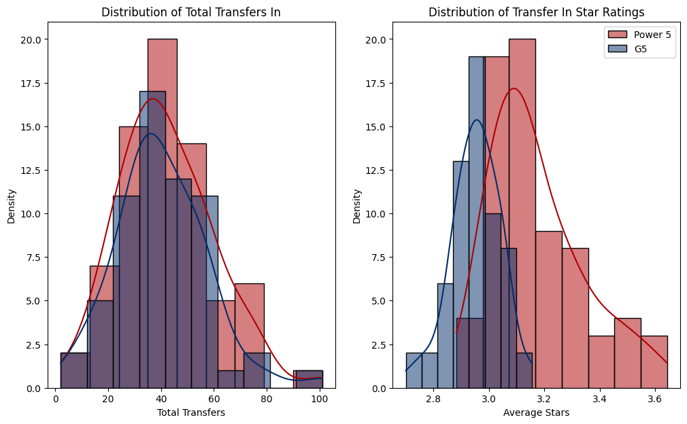
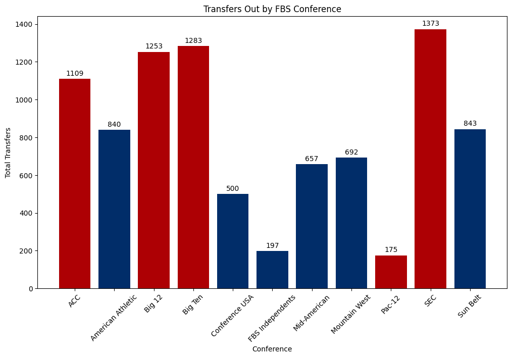
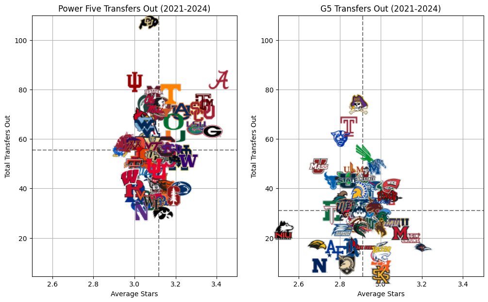
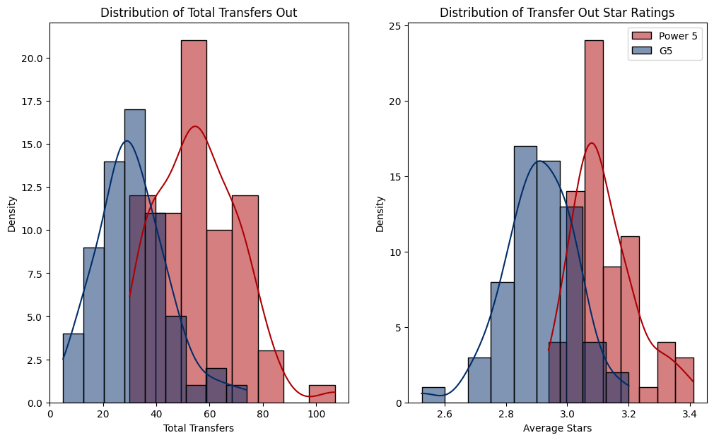
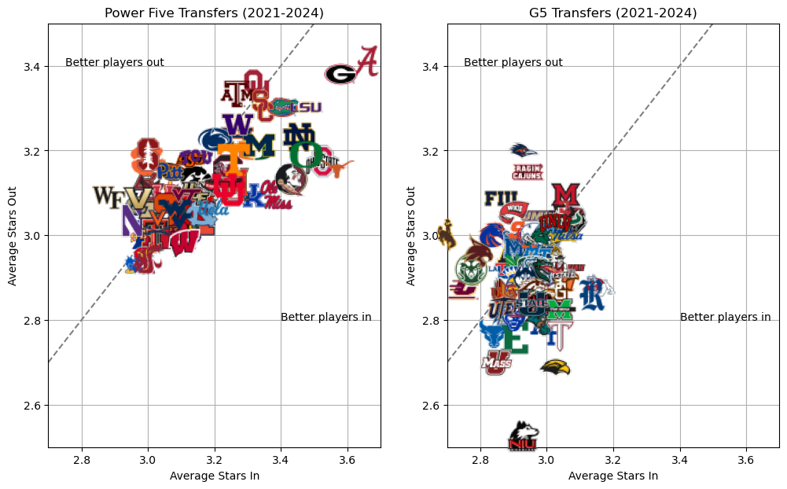
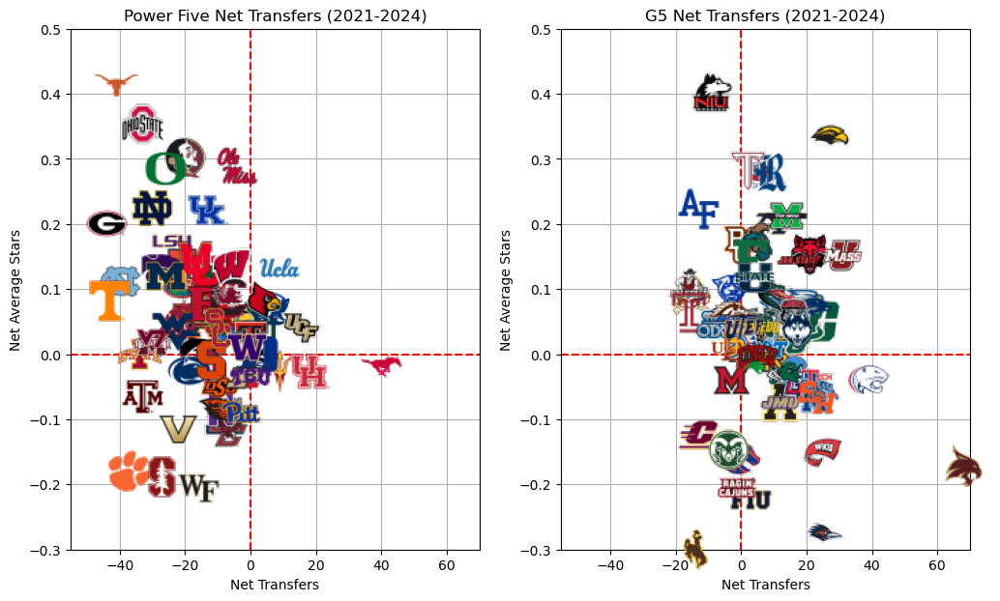

import cfbd
from cfbd.rest import ApiException
from cfbd.models.team_record import TeamRecord
import pandas as pd
from pandas import json_normalize
import matplotlib.pyplot as plt
from matplotlib.offsetbox import OffsetImage, AnnotationBbox
import numpy as np
import seaborn as snsCollege football has experienced monumental changes over the last six and a half years since the launch of the NCAA Transfer Portal. Combined with the advent of (legalized) Name, Image, and Likeness payments, collegiate athletes now have unprecedented levels of autonomy over their careers. Proponents of The Portal laud the addition for allowing players to be treated like professional athletes and be compensated according to their fair market values. Collegiate athletics are a multi-billion dollar industry after all. Critics say that it is ruining the sport by eroding tradition and watering down, if not removing entirely, the student portion of student athlete.
If you are looking for another blog with some takes about whether or not the transfer portal is good for The Sport™, there are plenty of those elsewhere. I’m interested in seeing how much roster turnover and, by extension, the Transfer Portal matters for team success.
I’m particularly interested in the Non-Power Conference teams. One of the biggest criticisms from the people most affected by the Transfer Portal is that the lower level teams get picked clean by the bigger programs each off-season. I want to see if that is true and, if it is, to what effect.
I’m pulling data from the cfbd-python library for this post. If you like college football, this API is a must for your data analysis. A note on the API: you must sign up for an API key in order to use this it. It is very easy to get one and it is generally sent out very quickly after you sign up. I have a cell block hidden below my imports that configures my API key so I can make requests, so you will not be able to replicate my code simply from copying and pasting. Follow the documentation to configure your API and you’ll be golden.
client = cfbd.ApiClient(configuration)
teams_api = cfbd.TeamsApi(client)
players_api = cfbd.PlayersApi(client)
games_api = cfbd.GamesApi(client)
players_api = cfbd.PlayersApi(client)
returning_production_response = []
records_response = []
transfer_response = []
try:
teams_response = teams_api.get_fbs_teams() # Get a list of all FBS teams
for year in range(2021, 2025): # Get data for 2021-2024
returning_production_response += players_api.get_returning_production(year=year) # Returning production
records_response += games_api.get_team_records(year=year) # Team records
transfer_response += players_api.get_transfer_portal(year=year) # Transfer players
except ApiException as e:
print("Exception when calling StatsApi->get_stats_seasons: %s\n" % e)
print("Status code: %s" % e.status)
# Data response comes as object, we need to convert them to dictionaries
team_dicts = [vars(team) for team in teams_response]
teams_df = pd.DataFrame(team_dicts)
returning_production_dicts = [vars(returning_production) for returning_production in returning_production_response]
returning_production_df = pd.DataFrame(returning_production_dicts)
records_dicts = [vars(record) for record in records_response]
records_df = pd.DataFrame(records_dicts)
# The records have nested objects in these columns, so we need to extract that data into their own columns
nested_columns = ["_total", "_conference_games", "_home_games", "_away_games"]
for column in nested_columns:
records_df[column] = records_df[column].apply(lambda x: vars(x) if x else {})
normalized_df = pd.json_normalize(records_df[column])
normalized_df.columns = [f"{column[1:]}_{subcolumn}" for subcolumn in normalized_df.columns]
records_df = pd.concat([records_df, normalized_df], axis=1)
records_df.drop(columns=[column], inplace=True)
transfer_dicts = [vars(transfer) for transfer in transfer_response]
transfer_df = pd.DataFrame(transfer_dicts)This dataframe gets us a list of all FBS college football teams.
teams_df.head()| _configuration | _id | _school | _mascot | _abbreviation | _alt_name_1 | _alt_name_2 | _alt_name_3 | _classification | _conference | _division | _color | _alt_color | _logos | _twitter | _location | discriminator | |
|---|---|---|---|---|---|---|---|---|---|---|---|---|---|---|---|---|---|
| 0 | <cfbd.configuration.Configuration object at 0x... | 2005 | Air Force | Falcons | AFA | None | None | None | None | Mountain West | None | #004a7b | #ffffff | [http://a.espncdn.com/i/teamlogos/ncaa/500/200... | @AF_Football | {'capacity': 46692.0,\n 'city': 'Colorado Spri... | None |
| 1 | <cfbd.configuration.Configuration object at 0x... | 2006 | Akron | Zips | AKR | None | None | None | None | Mid-American | None | #00285e | #84754e | [http://a.espncdn.com/i/teamlogos/ncaa/500/200... | @ZipsFB | {'capacity': 30000.0,\n 'city': 'Akron',\n 'co... | None |
| 2 | <cfbd.configuration.Configuration object at 0x... | 333 | Alabama | Crimson Tide | ALA | None | None | None | None | SEC | None | #9e1632 | #ffffff | [http://a.espncdn.com/i/teamlogos/ncaa/500/333... | @AlabamaFTBL | {'capacity': 101821.0,\n 'city': 'Tuscaloosa',... | None |
| 3 | <cfbd.configuration.Configuration object at 0x... | 2026 | App State | Mountaineers | APP | None | None | None | None | Sun Belt | East | #ffcc00 | #222222 | [http://a.espncdn.com/i/teamlogos/ncaa/500/202... | @AppState_FB | {'capacity': 30000.0,\n 'city': 'Boone',\n 'co... | None |
| 4 | <cfbd.configuration.Configuration object at 0x... | 12 | Arizona | Wildcats | ARIZ | None | None | None | None | Big 12 | None | #0c234b | #ab0520 | [http://a.espncdn.com/i/teamlogos/ncaa/500/12.... | @ArizonaFBall | {'capacity': 50782.0,\n 'city': 'Tucson',\n 'c... | None |
This dataframe has returning production for each team. This gives us a percentage of usage returning and PPA numbers. PPA (sometimes called EPA) is a measure of how many expected points are added on a given play.
returning_production_df = returning_production_df[returning_production_df['_team'].isin(teams_df['_school'])]
returning_production_df.head()| _configuration | _season | _team | _conference | _total_ppa | _total_passing_ppa | _total_receiving_ppa | _total_rushing_ppa | _percent_ppa | _percent_passing_ppa | _percent_receiving_ppa | _percent_rushing_ppa | _usage | _passing_usage | _receiving_usage | _rushing_usage | discriminator | |
|---|---|---|---|---|---|---|---|---|---|---|---|---|---|---|---|---|---|
| 0 | <cfbd.configuration.Configuration object at 0x... | 2021 | Air Force | Mountain West | 126.8 | 35.0 | 20.8 | 71.0 | 0.742 | 1.000 | 0.540 | 0.724 | 0.724 | 1.000 | 0.745 | 0.662 | None |
| 1 | <cfbd.configuration.Configuration object at 0x... | 2021 | Akron | Mid-American | 27.5 | -19.8 | 23.1 | 24.2 | 0.611 | 0.756 | 0.545 | 0.826 | 0.805 | 0.902 | 0.694 | 0.788 | None |
| 2 | <cfbd.configuration.Configuration object at 0x... | 2021 | Alabama | SEC | 148.6 | 16.7 | 90.1 | 41.7 | 0.198 | 0.058 | 0.268 | 0.336 | 0.260 | 0.072 | 0.349 | 0.368 | None |
| 4 | <cfbd.configuration.Configuration object at 0x... | 2021 | Arizona | Pac-12 | 40.2 | -15.2 | 41.4 | 14.0 | 0.442 | -2.980 | 0.704 | 0.515 | 0.478 | 0.427 | 0.648 | 0.371 | None |
| 5 | <cfbd.configuration.Configuration object at 0x... | 2021 | Arizona State | Pac-12 | 127.8 | 29.8 | 47.1 | 50.8 | 0.983 | 1.000 | 0.946 | 1.000 | 0.966 | 1.000 | 0.855 | 1.000 | None |
Get the records for each team each season.
records_df = records_df[records_df['_team'].isin(teams_df['_school'])]
records_df.head()| _configuration | _year | _team_id | _team | _conference | _division | _expected_wins | discriminator | total__configuration | total__games | ... | home_games__wins | home_games__losses | home_games__ties | home_games_discriminator | away_games__configuration | away_games__games | away_games__wins | away_games__losses | away_games__ties | away_games_discriminator | |
|---|---|---|---|---|---|---|---|---|---|---|---|---|---|---|---|---|---|---|---|---|---|
| 1 | <cfbd.configuration.Configuration object at 0x... | 2021 | 62 | Hawai'i | Mountain West | West | 6.3 | None | <cfbd.configuration.Configuration object at 0x... | 13 | ... | 4 | 2 | 0 | None | <cfbd.configuration.Configuration object at 0x... | 7 | 2 | 5 | 0 | None |
| 7 | <cfbd.configuration.Configuration object at 0x... | 2021 | 2306 | Kansas State | Big 12 | 7.4 | None | <cfbd.configuration.Configuration object at 0x... | 13 | ... | 4 | 3 | 0 | None | <cfbd.configuration.Configuration object at 0x... | 4 | 2 | 2 | 0 | None | |
| 13 | <cfbd.configuration.Configuration object at 0x... | 2021 | 2751 | Wyoming | Mountain West | Mountain | 7.6 | None | <cfbd.configuration.Configuration object at 0x... | 13 | ... | 3 | 3 | 0 | None | <cfbd.configuration.Configuration object at 0x... | 6 | 3 | 3 | 0 | None |
| 15 | <cfbd.configuration.Configuration object at 0x... | 2021 | 213 | Penn State | Big Ten | East | 7.1 | None | <cfbd.configuration.Configuration object at 0x... | 13 | ... | 5 | 2 | 0 | None | <cfbd.configuration.Configuration object at 0x... | 5 | 2 | 3 | 0 | None |
| 27 | <cfbd.configuration.Configuration object at 0x... | 2021 | 2649 | Toledo | Mid-American | West | 8.0 | None | <cfbd.configuration.Configuration object at 0x... | 13 | ... | 3 | 3 | 0 | None | <cfbd.configuration.Configuration object at 0x... | 6 | 4 | 2 | 0 | None |
5 rows × 32 columns
And finally, get the number of incoming transfers for a season. These are grouped based on transfer date. Because the transfer portal windows are all in the same year in which a season is played, we do not need to lag this by a year. For example, if a player transfers in May of 2025, he would be eligible to play for the fall 2025 season.
transfer_df = transfer_df.dropna(subset=['_destination', '_origin'])
transfers_in = (
transfer_df.groupby(['_destination', '_season'])
.size()
.reset_index(name='total_transfers_in')
)
transfers_out = (
transfer_df.groupby(['_origin', '_season'])
.size()
.reset_index(name='total_transfers_out')
)
transfer_df = (
pd.merge(
transfers_in, transfers_out,
left_on=['_destination', '_season'],
right_on=['_origin', '_season'],
how='outer'
)
)
transfer_df.head()| _destination | _season | total_transfers_in | _origin | total_transfers_out | |
|---|---|---|---|---|---|
| 0 | Abilene Christian | 2021 | 4.0 | Abilene Christian | 2.0 |
| 1 | Abilene Christian | 2022 | 9.0 | Abilene Christian | 4.0 |
| 2 | Abilene Christian | 2023 | 4.0 | Abilene Christian | 2.0 |
| 3 | Abilene Christian | 2024 | 13.0 | Abilene Christian | 2.0 |
| 4 | Air Force | 2021 | 2.0 | Air Force | 2.0 |
Combine them all together and…
# Combine data frames with a series of merges
df = teams_df.merge(records_df.set_index('_team_id'), how="inner",
left_on=['_id'], right_on=['_team_id'])
df = df.merge(returning_production_df, how='left',
left_on=['_team', '_year'], right_on=['_team', '_season'])
df = df.merge(transfer_df, how='left',
left_on=['_school', '_year'], right_on=['_destination', '_season'])
#Get rid of columns that were duplicated in the merges and others that are not needed
df = df.loc[:, ~df.columns.str.endswith(('_x', '_y'))
& ~df.columns.str.contains('_alt_name')
& ~df.columns.str.contains('discriminator')
& ~df.columns.str.contains('configuration')]
# Drop records that are missing the data that we will need
usage_ppa_transfer_cols = df.columns[df.columns.str.endswith(('_usage', '_ppa', 'total_transfers_in'))].tolist()
df = df.dropna(subset=usage_ppa_transfer_cols)
df.head()| _id | _school | _mascot | _abbreviation | _classification | _color | _alt_color | _logos | _twitter | _location | ... | _percent_receiving_ppa | _percent_rushing_ppa | _usage | _passing_usage | _receiving_usage | _rushing_usage | _destination | total_transfers_in | _origin | total_transfers_out | |
|---|---|---|---|---|---|---|---|---|---|---|---|---|---|---|---|---|---|---|---|---|---|
| 0 | 2005 | Air Force | Falcons | AFA | None | #004a7b | #ffffff | [http://a.espncdn.com/i/teamlogos/ncaa/500/200... | @AF_Football | {'capacity': 46692.0,\n 'city': 'Colorado Spri... | ... | 0.540 | 0.724 | 0.724 | 1.000 | 0.745 | 0.662 | Air Force | 2.0 | Air Force | 2.0 |
| 4 | 2006 | Akron | Zips | AKR | None | #00285e | #84754e | [http://a.espncdn.com/i/teamlogos/ncaa/500/200... | @ZipsFB | {'capacity': 30000.0,\n 'city': 'Akron',\n 'co... | ... | 0.545 | 0.826 | 0.805 | 0.902 | 0.694 | 0.788 | Akron | 3.0 | Akron | 3.0 |
| 5 | 2006 | Akron | Zips | AKR | None | #00285e | #84754e | [http://a.espncdn.com/i/teamlogos/ncaa/500/200... | @ZipsFB | {'capacity': 30000.0,\n 'city': 'Akron',\n 'co... | ... | 0.349 | 0.155 | 0.485 | 0.343 | 0.290 | 0.806 | Akron | 15.0 | Akron | 4.0 |
| 6 | 2006 | Akron | Zips | AKR | None | #00285e | #84754e | [http://a.espncdn.com/i/teamlogos/ncaa/500/200... | @ZipsFB | {'capacity': 30000.0,\n 'city': 'Akron',\n 'co... | ... | 0.614 | 0.893 | 0.758 | 0.995 | 0.573 | 0.596 | Akron | 4.0 | Akron | 6.0 |
| 7 | 2006 | Akron | Zips | AKR | None | #00285e | #84754e | [http://a.espncdn.com/i/teamlogos/ncaa/500/200... | @ZipsFB | {'capacity': 30000.0,\n 'city': 'Akron',\n 'co... | ... | 0.681 | 0.490 | 0.759 | 0.994 | 0.666 | 0.525 | Akron | 15.0 | Akron | 16.0 |
5 rows × 46 columns
…voila! We have something that we can more easily work with now.
Exploratory Data Analysis
Before going looking at how transfer are affecting production, I want to get more familiar with the data set and see if we can learn anything interesting in there.
Code
transfers_by_season = df[['_year', 'total_transfers_in']].groupby('_year').sum().reset_index()
transfers_by_season['pct_change'] = transfers_by_season['total_transfers_in'].pct_change() * 100
plt.figure(figsize=(12, 7))
bars = plt.bar(transfers_by_season['_year'], transfers_by_season['total_transfers_in'], color='#012d69')
for i, bar in enumerate(bars):
if i > 0:
pct_change = transfers_by_season['pct_change'].iloc[i]
label = f"\u25B2 {pct_change:.1f}%"
plt.text(bar.get_x() + bar.get_width() / 2, bar.get_height() + 10, label, ha='center', va='bottom', color='green')
plt.xticks(ticks=transfers_by_season['_year'])
plt.xlabel('Season')
plt.ylabel('Total Transfers')
plt.title('Transfers In Across FBS From 2021-2024')Text(0.5, 1.0, 'Transfers In Across FBS From 2021-2024')
Transfers have increased year over year each year this decade with no real signs of slowing down. Whatever effect is made from this new Transfer Portal is likely to continue to grow moving forward until some sort of equilibrium is found.
But where are these transfers going?
Code
transfers_in_by_conference = df[['_conference', 'total_transfers_in']].groupby('_conference').sum().reset_index()
power_conferences = ['ACC', 'Big 12', 'Big Ten', 'Pac-12', 'SEC']
plt.figure(figsize=(12, 7))
colors = ['#ad0004' if conference in power_conferences else '#012d69' for conference in transfers_in_by_conference['_conference']]
bars = plt.bar(transfers_in_by_conference['_conference'], transfers_in_by_conference['total_transfers_in'], color=colors)
for i, bar in enumerate(bars):
transfers = bar.get_height().astype(int)
plt.text(bars[i].get_x() + bars[i].get_width() / 2, bars[i].get_height() + 10, transfers,
ha='center', va='bottom', color='black')
plt.xticks(rotation=45)
plt.xlabel('Conference')
plt.ylabel('Total Transfers')
plt.title('Transfers In by FBS Conference')Text(0.5, 1.0, 'Transfers In by FBS Conference')
This chart surprises me a bit. I would have expected that all of the Power Five conferences would be head and shoulders above all of the Group of Five conferences. In reality, the top end of G5 conferences are getting nearly as many transfers, if not more, than the Power Five conferences. Also, what are they doing in the AAC?
A quick point about conference realignment: because our data is up to the 2024 offseason, teams that played their first season in their new conference in 2024 are still counted towards their original conference. If they played a season in their new conference prior to 2024, those changes are accurately reflected. For example, all Washington and Oregon data still count towards the Pac-12, all Texas and Oklahoma data still count towards the Big 12. But 2021-2023 BYU counts towards FBS Independents, but 2024 BYU counts towards the Big 12.
Code
transfers = pd.DataFrame(transfer_dicts) # Remake transfers data frame without aggregation
transfers = transfers.groupby('_destination').agg({'_stars': 'mean', '_season': 'count'}).rename({'_season': 'total_transfers_in', '_stars': 'avg_stars'}, axis=1).reset_index()
transfers = transfers.merge(teams_df[['_id', '_school', '_conference']], how='inner', left_on=['_destination'], right_on=['_school']).drop('_school', axis=1)
power_five_transfers = transfers[transfers['_conference'].isin(power_conferences) | transfers['_destination'].str.contains('Notre Dame')]
g5_transfers = transfers[~transfers['_conference'].isin(power_conferences) & ~transfers['_destination'].str.contains('Notre Dame')]
# Function to get logos from image folder. Variable 'logos_folder' is defined in the hidden cell
# with API config. It is a local file path
def get_image_path(id):
return OffsetImage(plt.imread(f"{logos_folder}/{id}.png"))
# Scatter plots
fig, ax = plt.subplots(nrows=1, ncols=2, figsize=(12, 7))
ax[0].scatter(power_five_transfers['avg_stars'], power_five_transfers['total_transfers_in'], alpha=0)
# Bind logo to data point
for x0, y0, id in zip(power_five_transfers['avg_stars'], power_five_transfers['total_transfers_in'], power_five_transfers['_id']):
ab = AnnotationBbox(get_image_path(id), (x0, y0), frameon=False)
ax[0].add_artist(ab)
ax[0].axvline(power_five_transfers['avg_stars'].mean(), color='gray', linestyle='--')
ax[0].axhline(power_five_transfers['total_transfers_in'].mean(), color='gray', linestyle='--')
ax[0].set_xlabel('Average Stars')
ax[0].set_ylabel('Total Transfers')
ax[0].set_xlim(2.7, 3.7)
ax[0].set_ylim(0, 105)
ax[0].set_title('Power Five Transfers In (2021-2024)')
ax[0].grid(True)
ax[1].scatter(g5_transfers['avg_stars'], g5_transfers['total_transfers_in'], alpha=0)
for x0, y0, id in zip(g5_transfers['avg_stars'], g5_transfers['total_transfers_in'], g5_transfers['_id']):
ab = AnnotationBbox(get_image_path(id), (x0, y0), frameon=False)
ax[1].add_artist(ab)
ax[1].axvline(g5_transfers['avg_stars'].mean(), color='gray', linestyle='--')
ax[1].axhline(g5_transfers['total_transfers_in'].mean(), color='gray', linestyle='--')
ax[1].set_xlabel('Average Stars')
ax[1].set_ylabel('Total Transfers')
ax[1].set_xlim(2.7, 3.7)
ax[1].set_ylim(0, 105)
ax[1].set_title('G5 Transfers In (2021-2024)')
ax[1].grid(True)
plt.show()
# Distribution plots
fig, ax = plt.subplots(nrows=1, ncols=2, figsize=(12, 7))
sns.histplot(power_five_transfers['total_transfers_in'], label="Power 5", kde=True, color='#ad0004', alpha=0.5, ax=ax[0])
sns.histplot(g5_transfers['total_transfers_in'], label="G5", kde=True, color='#012d69', alpha=0.5, ax=ax[0])
ax[0].set_xlabel("Total Transfers")
ax[0].set_ylabel("Density")
ax[0].set_title("Distribution of Total Transfers In")
sns.histplot(power_five_transfers['avg_stars'], label="Power 5", kde=True, color='#ad0004', alpha=0.5, ax=ax[1])
sns.histplot(g5_transfers['avg_stars'], label="G5", kde=True, color='#012d69', alpha=0.5, ax=ax[1])
ax[1].set_xlabel("Average Stars")
ax[1].set_ylabel("Density")
ax[1].set_title("Distribution of Transfer In Star Ratings")
plt.legend()
plt.show()
# Calculate effect power for average stars
n_power_five = len(power_five_transfers)
n_g5 = len(g5_transfers)
std_power_five = power_five_transfers['avg_stars'].std()
std_g5 = g5_transfers['avg_stars'].std()
pooled_std = np.sqrt(((n_power_five - 1) * std_power_five**2 + (n_g5 - 1) * std_g5**2) / (n_power_five + n_g5 - 2))
cohens_d = (power_five_transfers['avg_stars'].mean() - g5_transfers['avg_stars'].mean()) / pooled_std
print(f"Cohen's D: {cohens_d:.2f}")

Cohen's D: 1.60This tells me that there isn’t a whole lot of difference between Power Five and G5 in the quantity of transfers that are coming in to a program, but there is a big difference in the quality of transfers coming in. The average star rating for a player going to a Power Five school is 3.17, while the average star rating for a player going to a G5 school is 2.95. Cohen’s d score for the effect size of the difference between the two is a whopping 1.6, indicating a very massive difference between the two. Generally speaking, anything over a 0.8 is considered a strong effect size. We are doubling that here.
Are G5 Schools Getting Picked Clean?
We’ve talked a good bit about transfers but what about transfers out? As we discussed earlier, however, coaches at the G5 level often claim that their teams are scavenged by larger schools. We’ve already established that there are roughly the same quantity of transfers across levels and that power conference teams tend to get the better players, but that doesn’t necessarily tell me whether or not G5 teams are losing their best players. It’s reasonable to think that the better players are already at the Power Five teams. Perhaps the player movement is just players going from P5 to P5 or from G5 to G5.
Code
transfers_out_by_conference = df[['_conference', 'total_transfers_out']].groupby('_conference').sum().reset_index()
plt.figure(figsize=(12, 7))
colors = ['#ad0004' if conference in power_conferences else '#012d69' for conference in transfers_out_by_conference['_conference']]
bars = plt.bar(transfers_out_by_conference['_conference'], transfers_out_by_conference['total_transfers_out'], color=colors)
for i, bar in enumerate(bars):
transfers_number = bar.get_height().astype(int)
plt.text(bars[i].get_x() + bars[i].get_width() / 2, bars[i].get_height() + 10, transfers_number,
ha='center', va='bottom', color='black')
plt.xticks(rotation=45)
plt.xlabel('Conference')
plt.ylabel('Total Transfers')
plt.title('Transfers Out by FBS Conference')Text(0.5, 1.0, 'Transfers Out by FBS Conference')
Another surprise here from this chart. I would have expected that power conference teams have less roster turnover from the transfer portal. My thinking was that the players are at or near the pinnacle of college football, so they would be more likely to stay. That does not appear to be the case. Again, the AAC is an exception here, but other than them, all Power 5 conferences have more transfers out than the G5 conferences.
One thing that I think is interesting to note here is that there are a lot more players transferring out of FBS than are transferring in to FBS. This tells me that there are a lot of players going to FCS, DII, DIII, or NAIA schools. Hold on to this thought. I’m going to come back to that in a second.
So, how about the quality of the players transferring out? I think it is important to think about the quality of players that are already at each level again. P5 schools are going to naturally have better quality players. But if there is some similarity to level of player transferring out between P5 and G5, then it lends some credence to the idea that G5 teams are getting poached.
Code
transfers_out = pd.DataFrame(transfer_dicts) # Remake transfers data frame without aggregation
transfers_out = transfers_out.dropna(subset=['_origin', '_destination'])
transfers_out = transfers_out.groupby('_origin').agg({'_stars': 'mean', '_season': 'count'}).rename({'_season': 'total_transfers_out', '_stars': 'avg_stars'}, axis=1).reset_index()
transfers_out = transfers_out.merge(teams_df[['_id', '_school', '_conference']], how='inner', left_on=['_origin'], right_on=['_school']).drop('_school', axis=1)
power_five_transfers = transfers_out[transfers_out['_conference'].isin(power_conferences) | transfers_out['_origin'].str.contains('Notre Dame')]
g5_transfers = transfers_out[~transfers_out['_conference'].isin(power_conferences) & ~transfers_out['_origin'].str.contains('Notre Dame')]
#Scatter plots
fig, ax = plt.subplots(nrows=1, ncols=2, figsize=(12, 7))
ax[0].scatter(power_five_transfers['avg_stars'], power_five_transfers['total_transfers_out'], alpha=0)
for x0, y0, id in zip(power_five_transfers['avg_stars'], power_five_transfers['total_transfers_out'], power_five_transfers['_id']):
ab = AnnotationBbox(get_image_path(id), (x0, y0), frameon=False)
ax[0].add_artist(ab)
ax[0].axvline(power_five_transfers['avg_stars'].mean(), color='gray', linestyle='--')
ax[0].axhline(power_five_transfers['total_transfers_out'].mean(), color='gray', linestyle='--')
ax[0].set_xlabel('Average Stars')
ax[0].set_ylabel('Total Transfers')
ax[0].set_xlim(2.5, 3.5)
ax[0].set_ylim(4.5, 110)
ax[0].set_title('Power Five Transfers Out (2021-2024)')
ax[0].grid(True)
ax[1].scatter(g5_transfers['avg_stars'], g5_transfers['total_transfers_out'], alpha=0)
for x0, y0, id in zip(g5_transfers['avg_stars'], g5_transfers['total_transfers_out'], g5_transfers['_id']):
ab = AnnotationBbox(get_image_path(id), (x0, y0), frameon=False)
ax[1].add_artist(ab)
ax[1].axvline(g5_transfers['avg_stars'].mean(), color='gray', linestyle='--')
ax[1].axhline(g5_transfers['total_transfers_out'].mean(), color='gray', linestyle='--')
ax[1].set_xlabel('Average Stars')
ax[1].set_ylabel('Total Transfers')
ax[1].set_xlim(2.5, 3.5)
ax[1].set_ylim(4.5, 110)
ax[1].set_title('G5 Transfers Out (2021-2024)')
ax[1].grid(True)
# Distribution plots
fig, ax = plt.subplots(nrows=1, ncols=2, figsize=(12, 7))
sns.histplot(power_five_transfers['total_transfers_out'], label="Power 5", kde=True, color='#ad0004', alpha=0.5, ax=ax[0])
sns.histplot(g5_transfers['total_transfers_out'], label="G5", kde=True, color='#012d69', alpha=0.5, ax=ax[0])
ax[0].set_xlabel("Total Transfers")
ax[0].set_ylabel("Density")
ax[0].set_title("Distribution of Total Transfers Out")
sns.histplot(power_five_transfers['avg_stars'], label="Power 5", kde=True, color='#ad0004', alpha=0.5, ax=ax[1])
sns.histplot(g5_transfers['avg_stars'], label="G5", kde=True, color='#012d69', alpha=0.5, ax=ax[1])
ax[1].set_xlabel("Average Stars")
ax[1].set_ylabel("Density")
ax[1].set_title("Distribution of Transfer Out Star Ratings")
plt.legend()
plt.show()
# Effect power for average starts out
n_power_five = len(power_five_transfers)
n_g5 = len(g5_transfers)
std_power_five = power_five_transfers['avg_stars'].std()
std_g5 = g5_transfers['avg_stars'].std()
pooled_std = np.sqrt(((n_power_five - 1) * std_power_five**2 + (n_g5 - 1) * std_g5**2) / (n_power_five + n_g5 - 2))
cohens_d = (power_five_transfers['avg_stars'].mean() - g5_transfers['avg_stars'].mean()) / pooled_std
print(f"Cohen's D: {cohens_d:.2f}")

Cohen's D: 1.89These charts tell me that there is a lot of movement within P5 and G5 and, if anything, there are more players going from the Power 5 level to the Group of 5 level. If the number of players coming in are equal and the number of players going out from P5 schools is greater than the number of players going out from G5 schools, that necessarily means that more players are going from P5 to G5 than vise versa.
Further, and perhaps more importantly, is the Cohen’s D value that we are getting. The effect size of players transferring in was 1.6 indicating stronger players coming in to Power 5 schools. However, the effect size of players transferring out of Power 5 schools is even strong at 1.89. Obviously there are prep recruits to consider when thinking about the makeup of a college football team, but as far as the transfer portal is concerned Power Five schools have been operating a net talent loss.
Code
transfers_in = transfers.rename({'avg_stars': 'avg_stars_in'}, axis=1)
transfers_out = transfers_out.rename({'avg_stars': 'avg_stars_out'}, axis=1)
transfers_by_team = transfers_in.merge(transfers_out, how='left', on='_id').drop(['_conference_y', '_origin'], axis=1).rename({'_conference_x': '_conference', '_destination': 'team'}, axis=1)
transfers_by_team['net_stars'] = transfers_by_team['avg_stars_in'] - transfers_by_team['avg_stars_out']
transfers_by_team['net_transfers'] = transfers_by_team['total_transfers_in'] - transfers_by_team['total_transfers_out']
p5_transfers = transfers_by_team[transfers_by_team['_conference'].isin(power_conferences) | transfers_by_team['team'].str.contains('Notre Dame')]
g5_transfers = transfers_by_team[~transfers_by_team['_conference'].isin(power_conferences) & ~transfers_by_team['team'].str.contains('Notre Dame')]
fig, ax = plt.subplots(nrows=1, ncols=2, figsize=(12, 7))
ax[0].scatter(p5_transfers['avg_stars_in'], p5_transfers['avg_stars_out'], alpha=0)
for x0, y0, id in zip(p5_transfers['avg_stars_in'], p5_transfers['avg_stars_out'], p5_transfers['_id']):
ab = AnnotationBbox(get_image_path(id), (x0, y0), frameon=False)
ax[0].add_artist(ab)
ax[0].set_xlabel('Average Stars In')
ax[0].set_ylabel('Average Stars Out')
ax[0].annotate('Better players out', xy=(2.75, 3.4))
ax[0].annotate('Better players in', xy=(3.4, 2.8))
ax[0].set_xlim(2.7, 3.7)
ax[0].set_ylim(2.5, 3.5)
ax[0].axline(xy1=(2.7, 2.7), slope=1, color='gray', linestyle='--')
ax[0].set_title('Power Five Transfers (2021-2024)')
ax[0].grid(True)
ax[1].scatter(g5_transfers['avg_stars_in'], g5_transfers['avg_stars_out'], alpha=0)
for x0, y0, id in zip(g5_transfers['avg_stars_in'], g5_transfers['avg_stars_out'], g5_transfers['_id']):
ab = AnnotationBbox(get_image_path(id), (x0, y0), frameon=False)
ax[1].add_artist(ab)
ax[1].set_xlabel('Average Stars In')
ax[1].set_ylabel('Average Stars Out')
ax[1].set_xlim(2.7, 3.7)
ax[1].set_ylim(2.5, 3.5)
ax[1].annotate('Better players out', xy=(2.75, 3.4))
ax[1].annotate('Better players in', xy=(3.4, 2.8))
ax[1].axline(xy1=(2.7, 2.7), slope=1, color='gray', linestyle='--')
ax[1].set_title('G5 Transfers (2021-2024)')
ax[1].grid(True)
This plot broke my brain a bit. How is it possible that so many Power Five teams have better players coming in than going out, if we know that there are more players transferring away from the P5 than there are transferring to the G5? Until I saw that damned Script A again that has shown up in a class of its own on every plot that I’ve made so far.
Code
fig, ax = plt.subplots(nrows=1, ncols=2, figsize=(12, 7))
ax[0].scatter(p5_transfers['net_transfers'], p5_transfers['net_stars'], alpha=0)
for x0, y0, id in zip(p5_transfers['net_transfers'], p5_transfers['net_stars'], p5_transfers['_id']):
ab = AnnotationBbox(get_image_path(id), (x0, y0), frameon=False)
ax[0].add_artist(ab)
ax[0].set_xlabel('Net Transfers')
ax[0].set_ylabel('Net Average Stars')
ax[0].set_title('Power Five Net Transfers (2021-2024)')
ax[0].axhline(0, color='red', linestyle='--')
ax[0].axvline(0, color='red', linestyle='--')
ax[0].set_xlim(-55, 70)
ax[0].set_ylim(-0.3, .5)
ax[0].grid(True)
ax[1].scatter(g5_transfers['net_transfers'], g5_transfers['net_stars'], alpha=0)
for x0, y0, id in zip(g5_transfers['net_transfers'], g5_transfers['net_stars'], g5_transfers['_id']):
ab = AnnotationBbox(get_image_path(id), (x0, y0), frameon=False)
ax[1].add_artist(ab)
ax[1].set_xlabel('Net Transfers')
ax[1].set_ylabel('Net Average Stars')
ax[1].set_title('G5 Net Transfers (2021-2024)')
ax[1].axhline(0, color='red', linestyle='--')
ax[1].axvline(0, color='red', linestyle='--')
ax[1].set_xlim(-55, 70)
ax[1].set_ylim(-0.3, .5)
ax[1].grid(True)
plt.show()
print(f"Power Five Average Net Transfers: {p5_transfers['net_transfers'].mean()}")
print(f"G5 Average Net Transfers: {g5_transfers['net_transfers'].mean()}")
print(f"Power Five Average Net Stars: {p5_transfers['net_stars'].mean()}")
print(f"G5 Average Net Stars: {g5_transfers['net_stars'].mean()}")

Power Five Average Net Transfers: -13.557142857142857
G5 Average Net Transfers: 8.370967741935484
Power Five Average Net Stars: 0.05454902936543176
G5 Average Net Stars: 0.03710712681054378Power Five schools are losing, on average, 13.56 players to the transfer portal each year while Group of Five teams are gaining 8.37 players per year. So while the average stars of the players coming in to a P5 school is increasing, the number of bodies available for that team, through the transfer portal, is decreasing. Meanwhile, G5 schools are actually getting more, better players through the transfer portal.
Who is Really Hurt By This?
Given all of this information, I think the noise being made my G5 coaches about their players being poached is largely overstated. I understand the want for continuity and keeping players in your system. However, this data tells me that G5 schools are fairing much better in the transfer portal than power conference teams.
Who really has a right to be throwing a fit are the high school players who are yet to play a down of college football. There are only so many roster spots available in college football and not everyone is a blue chip recruit. Most of them are two or three star kids. If the players that didn’t make it at the P5 level are going to the G5, and the P5 schools are backfilling with blue chip guys, what happens to those two and three star players? Surely some of them will go to the Wyoming and Central Michigan’s of the world - the G5 teams with net negative transfers. But most of them will need to move down FCS or DII.
There is nothing wrong with playing at that level of football. I went to an FCS school and a handful of the players on the football team while I was there ended up in the NFL. If you’re good enough, they will find you. But for the vast majority of players, the players who go to school, play football on a scholarship, and then get a job like you and me, the difference in level can mean thousands of dollars in scholarship money lost. FCS schools have fewer scholarships to begin with, and even then those scholarships are generally not full rides.
Conclusion
This is not an admonishment of the Transfer Portal or the state of college football. There are plenty of unknowns in the sport and navigating these uncharted waters is bound to lead to some growing pains. I think it is fair to have criticisms of unlimited player transferring. But the next time someone tells you that it is killing the Group of Five teams, you will know that that is not true.